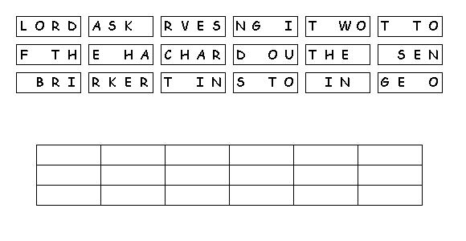

This week's lessons: (Genesis 18:1-15, (21:1-7), Psalm 116:1-2, 12-19) or (Exodus 19:2-8a, Psalm 100), Romans 5:1-8, Matthew 9:35-10:8, (9-23)
Middle-School Pew-work
If
we volunteered to help with the harvest, what would we be agreeing to
do?
_______________________________________________________________________________________
_______________________________________________________________________________________
_______________________________________________________________________________________
_______________________________________________________________________________________
Who
are some of the “sheep without a shepherd” that you might
care for in Christ's name?
________________________________________________________________________________
_______________________________________________________________________________________
_______________________________________________________________________________________
How
would you care for them?
________________________________________________________
_______________________________________________________________________________________
_______________________________________________________________________________________
_______________________________________________________________________________________
What
risks would you be taking to do so? Would you lose friends, be
wierded out by your peers, have less time to yourself, or something
else?
_____________________________
_______________________________________________________________________________________
_______________________________________________________________________________________
_______________________________________________________________________________________
_______________________________________________________________________________________
L L A
C O M E S G
|
(Matthew 10:23 NRSV) When they persecute you in one town, flee to the next; for truly I tell you, you will not have gone through all the towns of Israel before the Son of Man comes. |
Word List |
from http://www.efree.mb.ca/lectionarypuzzles free to distribute for free with this notice. Words are in a straight line in any direction |
||
Next
week: (Genesis
21:8-21 and
Psalm
86:1-10, 16-17 )
or (Jeremiah
20:7-13 and
Psalm
69:7-10, (11-15), 16-18), Romans
6:1b-11 ,
Matthew
10:24-39
This week's lessons: (Genesis 18:1-15, (21:1-7), Psalm 116:1-2, 12-19) or (Exodus 19:2-8a, Psalm 100), Romans 5:1-8, Matthew 9:35-10:8, (9-23)
Elementary School Pew-work
J P F T A T A X Z
M A B P
|
(Matthew 10:2-4 NRSV) These are the names of the twelve apostles: first, Simon, also known as Peter, and his brother Andrew; James son of Zebedee, and his brother John; {3} Philip and Bartholomew; Thomas and Matthew the tax collector; James son of Alphaeus, and Thaddaeus; {4} Simon the Cananaean, and Judas Iscariot, the one who betrayed him |
Word List |
from http://www.efree.mb.ca/lectionarypuzzles free to distribute for free with this notice. Words are in a straight line left to right or top to bottom |
||
1. What did Jesus preach
about?
_____________________________________________________________
2. What did Jesus mean
was ready to be
harvested?
_____________________________________________________________
3. What did Jesus'
disciples have the power to
do?
_____________________________________________________________
Questions taken from Sunday School Lessons; http://www.sundayschoollessons.com/baplord.htm

Created
by Puzzlemaker
at
DiscoverySchool.com
Next week: (Genesis 21:8-21 and Psalm 86:1-10, 16-17 ) or (Jeremiah 20:7-13 and Psalm 69:7-10, (11-15), 16-18), Romans 6:1b-11 , Matthew 10:24-39